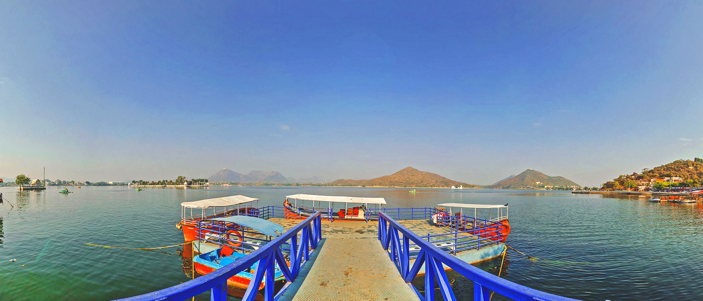
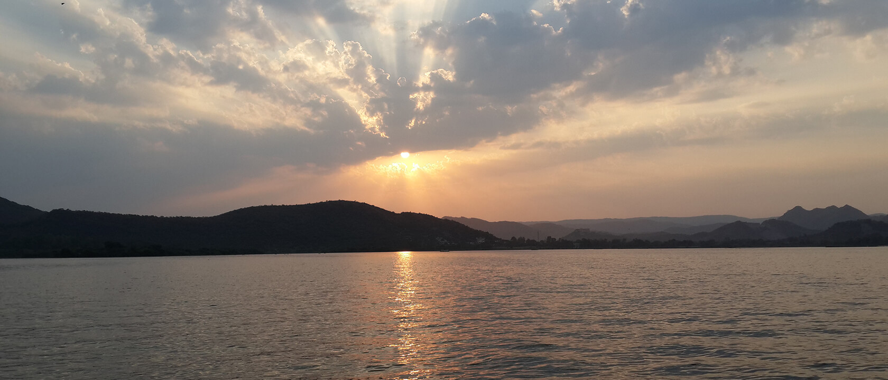

THE STUNNING PALACE-MUSEUM
The City Palace towers over Lake Pichola. The balconies, cupolas, and towers of the palace give a wonderful view of the lake and the surrounding city. This complex actually consists of four major and several minor palaces that collectively form the magnificent City Palace. The main part of the palace is now preserved as a museum displaying artifacts.
Udaipur City Palace
Highly visited, 4.6 stars!

OFFERS SPECTACULAR PANORAMIC VIEWS
Situated just outside Udaipur, this 19th-century palace is built on top of Bansdara hills. Used as a monsoon palace and hunting lodge, its builder, Maharana Sajjan Singh, originally planned to make it an astronomical center. The plan was cancelled with Maharana Sajjan Singh's premature death. It is still an awe-inspiring sight on the Udaipur skyline and offers spectacular views of the city and the areas around.
Monsoon Palace
Highly visited, 4.4 stars!

HOME TO MUST-VISIT ISLANDS
Fateh Sagar Lake is a charming lake surrounded by hills and woods. This artificial lake was constructed by Maharana Jai Singh in 1678 AD and it lies north of Lake Pichola. It was later reconstructed during the reign of Maharana Fateh Singh (1884-1930 AD) after the earthen bund (dam) was washed away in floods. The Maharana built Connaught Dam to commemorate the visit of the Duke of Connaught and the lake was renamed Fateh Sagar Lake.
Fateh Sagar Lake
Highly visited, 4.4 stars!

PICTURESQUE FRESHWATER LAKE OF UDAIPUR
Picholi was the name of a village that lent its name to the lake. The islands of Jagniwas and Jagmandir are housed in this lake. Along the eastern banks of the lake lies the City Palace. A boat ride in the lake around sunset offers a breathtaking view of the Lake and City Palace.
Lake Picholi
Highly visited, 4.4 stars!

RENOWNED ARENA OF A FAMOUS BATTLE
Haldighati is a famed mountain pass in the hills of the Aravalli Range. The pass, about 40 kilometres from Udaipur, connects the districts of Rajsamand and Pali. The pass gets its name from the yellow-coloured soil of the region (turmeric is called haldi in Hindi). The mountain pass has gone down the annals of history as the site where the Battle of Haldighati was fought in 1576 between Rana Pratap Singh of Mewar and Raja Man Singh of Amber who was the general of the Mughal emperor Akbar.
Haldi Ghati
Highly visited, 4.3 stars!